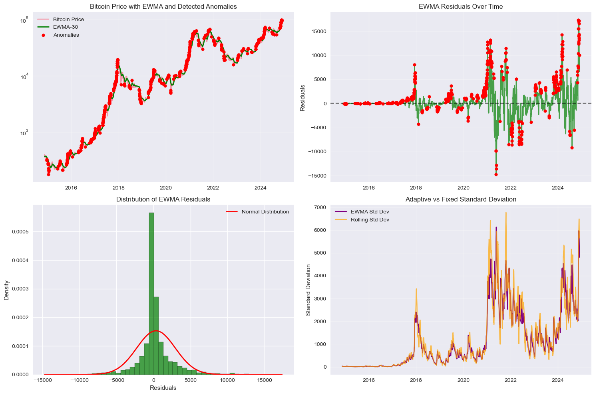
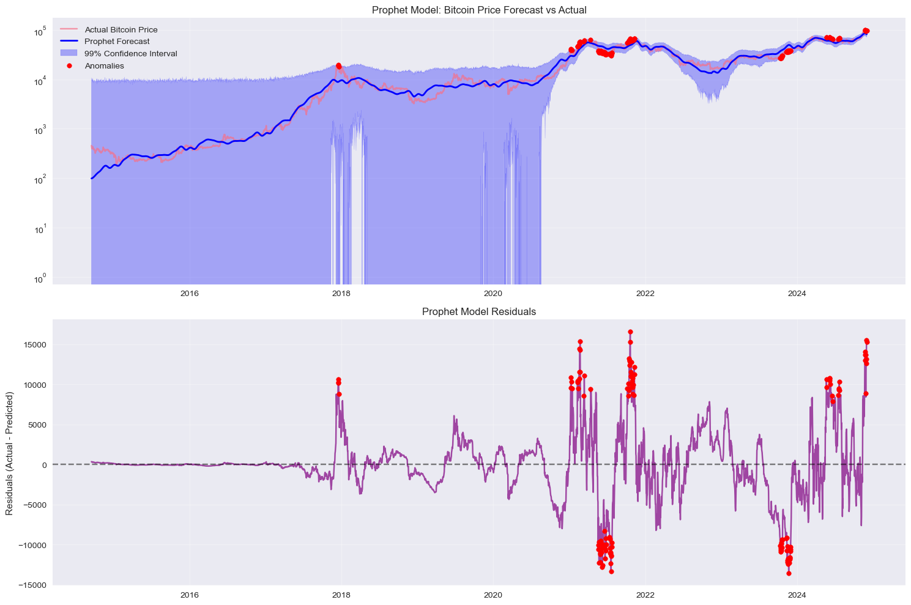
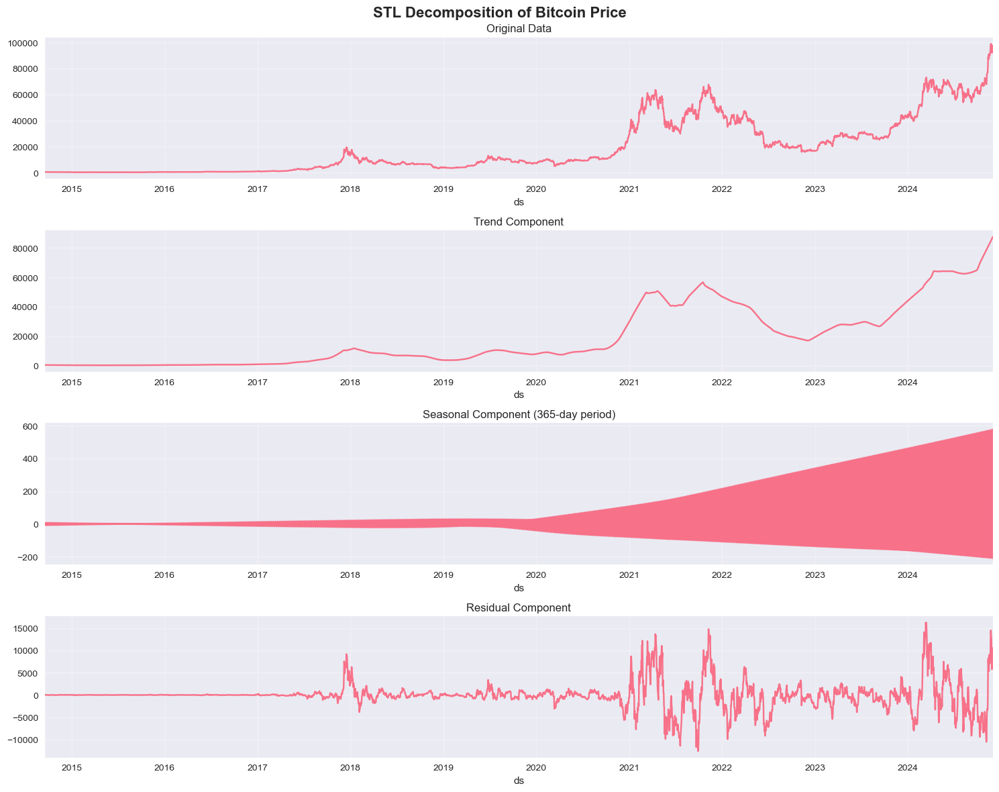
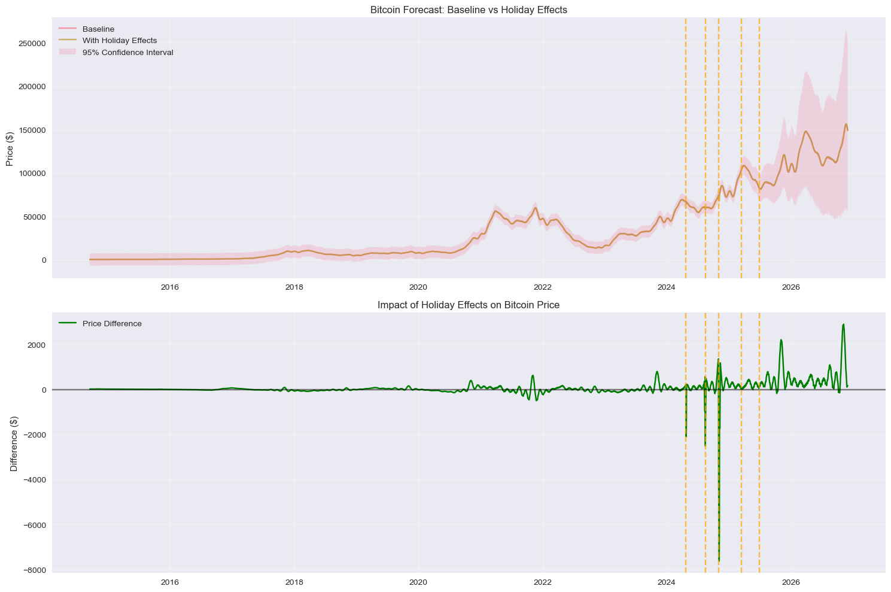
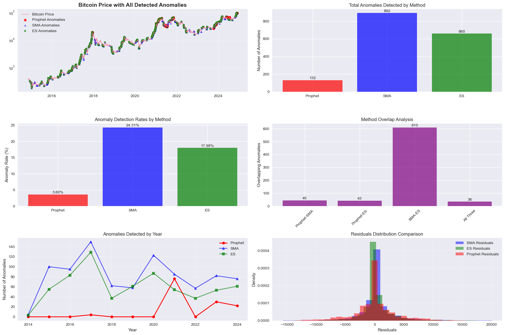

Applied three anomaly detection methods to 10 years of Bitcoin daily price data (2014–2024):
Simple Moving Average, Exponential Weighted Moving Average, and Meta's Prophet with Bayesian forecasting.
Compared detection rates, residual distributions, and the ability to model known market events as custom holidays.
The dataset spans September 2014 through November 2024, totaling 3,728 daily observations sourced via yfinance, covering Bitcoin's full lifecycle from early adoption through multiple bull-and-bust cycles. Each method was evaluated on its sensitivity, false-positive rate, and ability to surface structurally meaningful anomalies rather than routine volatility.
3,728
Daily observations Sep 2014 – Nov 2024
3
Detection methods compared
36
High-confidence anomalies flagged by all 3 methods
Method
Anomalies Detected
Rate
Basis
SMA (30-day)
892
24.31%
2σ rule on residuals
EWMA (α ≈ 0.065)
660
17.98%
2σ rule on time-weighted residuals
Prophet
132
3.60%
Bayesian prediction intervals
Method 1
Simple Moving Average
A 30-day rolling mean serves as the baseline trend. Residuals (actual minus smoothed) are standardized, and any observation beyond ±2σ is flagged. Visual inspection is supplemented with histogram and Q-Q plot analysis to validate the threshold choice.
Bitcoin price (log scale) with 30-day SMA. Red dots mark anomalies. Clusters appear during the 2017-18 bubble, the 2020 COVID crash, and the 2021-22 bull run peak, all periods of genuine structural disruption rather than routine noise.
SMA is interpretable and stable, but its fixed window treats all history equally. During rapid directional moves, the lag between price and average inflates residuals, generating false positives at the edges of trend changes. The fat-tailed residual distribution confirms this: extreme deviations occur more often than a Gaussian baseline would predict, validating the 2σ threshold as deliberately inclusive.
Method 2
Exponential Weighted Moving Average
EWMA (span = 30, α ≈ 0.065) down-weights older observations exponentially, making it more responsive to recent price action. This reduces lag during trend reversals and produces tighter, more meaningful residuals.

Bitcoin price with EWMA (green) and anomaly flags. Compared to SMA, the EWMA line tracks price more closely during rapid moves, leaving fewer residuals that are large purely due to lag. The result: 232 fewer anomalies flagged versus SMA, with 610 anomalies in common between the two methods.
EWMA residuals cluster more tightly around zero, and their histogram fits the normal curve more closely than SMA residuals, a sign that the smoother is doing a better job of tracking the underlying trend. The 50 EWMA-only anomalies represent events the adaptive weighting surfaced but SMA missed; the 282 SMA-only anomalies are largely lag artifacts.
Method 3
Prophet: Bayesian Anomaly Detection
Prophet decomposes the time series into trend, weekly seasonality, and a residual component. Anomalies are defined as observations falling outside the 99% posterior prediction interval, a far stricter criterion than statistical thresholding. This produces only 132 flags, all corresponding to major market disruptions.

Prophet forecast with 99% confidence band. Red dots mark the 132 anomalies (3.6% rate). Clusters coincide with the 2020 COVID crash, the 2021-22 extreme bull run, and late-2024 volatility, all events where price genuinely violated the expected trend-seasonal structure.
Decomposition & Forecast
STL Decomposition & Custom Holiday Modeling
STL decomposition separates the series into trend, seasonal, and residual components. For Bitcoin, the trend explains 96.7% of variance; the seasonal component is negligible (0.0%), confirming that Bitcoin lacks meaningful day-of-week or calendar effects. The residual (2.0%) captures idiosyncratic shocks.

STL decomposition. Top to bottom: observed price, trend component, seasonal component, and residual. The near-flat seasonal panel confirms the absence of calendar-driven cycles in Bitcoin prices.
A custom holiday was added to Prophet to model a synthetic anomaly in the future, demonstrating how known upcoming events (regulatory decisions, halving dates) can be encoded as structured disruptions in the forecast.

Prophet 12-month forecast with custom holiday event. The anomaly applied on 2024-11-04 produced an estimated −$7,631 (−10.1%) impact on the forecast. The widening confidence band reflects genuine uncertainty over longer horizons.
Results
Method Comparison
The three methods operate on a sensitivity-precision tradeoff. SMA is the most inclusive detector; Prophet is the most conservative. For trading signals requiring high confidence, Prophet's 36 anomalies agreed upon by all three methods represent the most actionable set.

All three methods plotted together. Agreement zones (all three methods flagging the same date) correspond to the most significant market events: the 2017–18 crypto bubble peak and collapse, the March 2020 COVID crash, and the 2021–22 all-time-high period.
Key takeaway: No single method is universally best. SMA provides broad coverage for exploratory analysis; EWMA reduces lag-induced false positives; Prophet surfaces only structurally unexpected events and provides calibrated uncertainty. Combining all three (using only the intersection) yields 36 high-confidence anomalies that correspond to documented market disruptions.